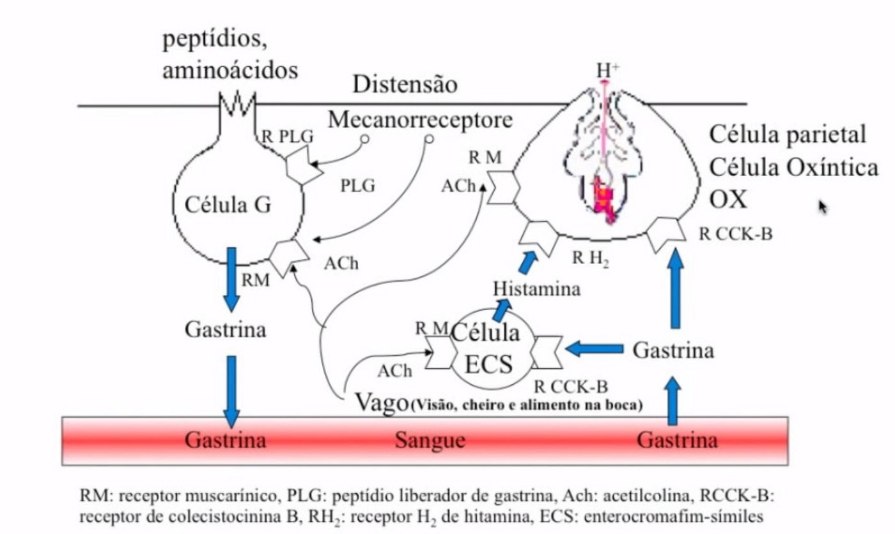
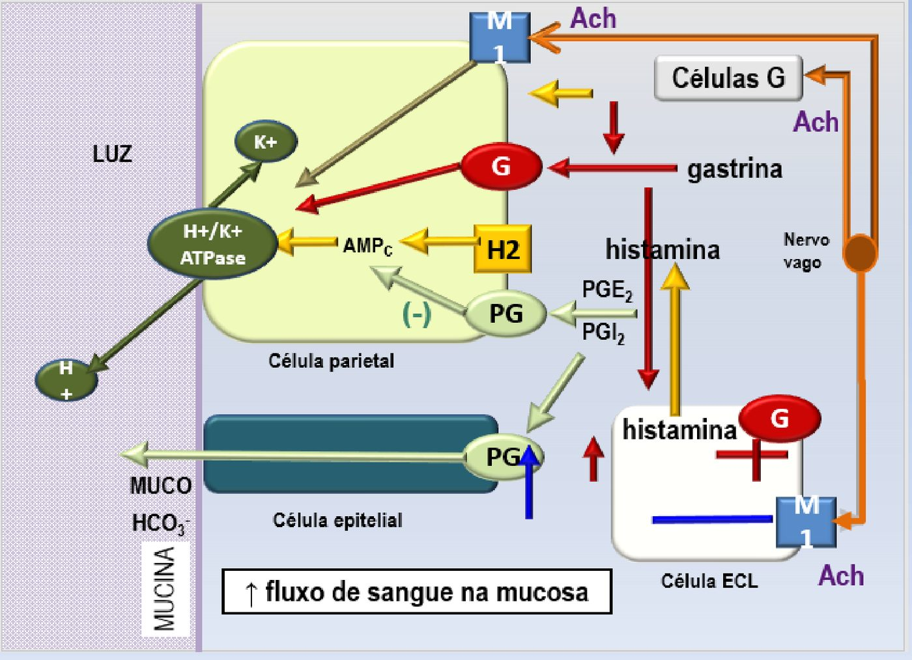
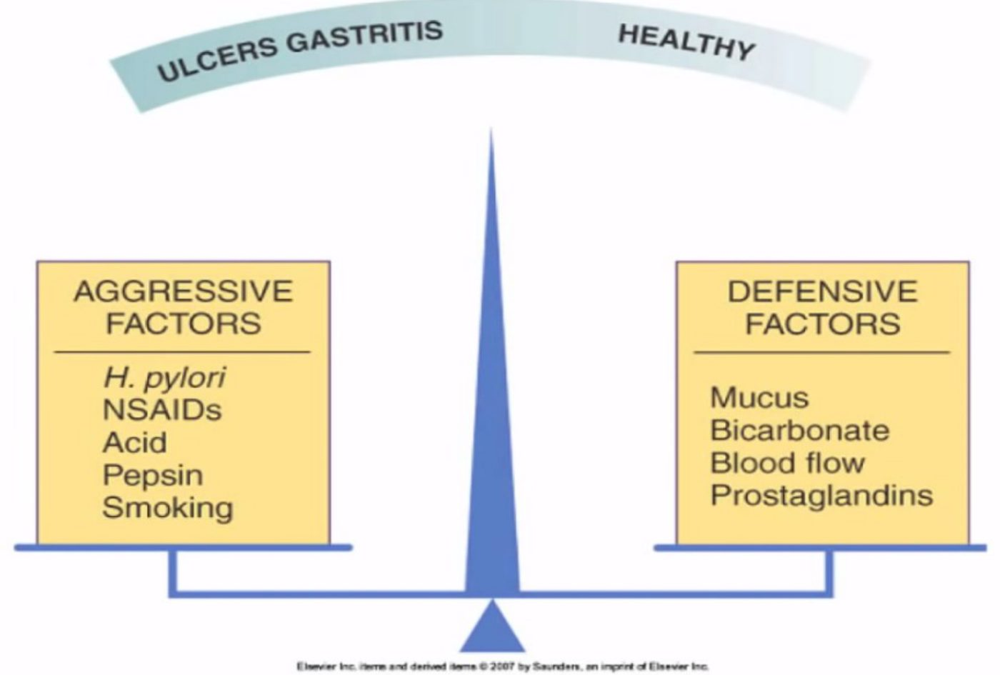
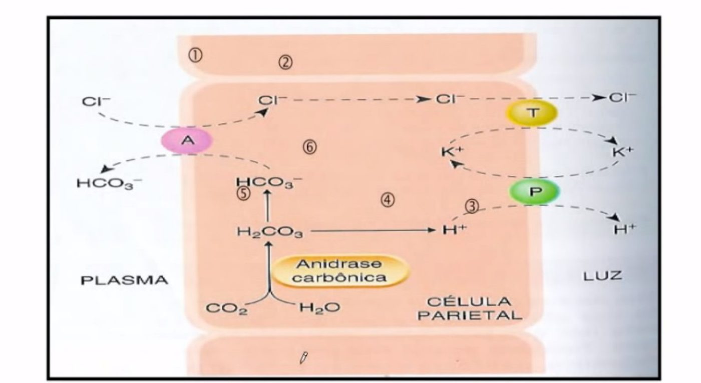
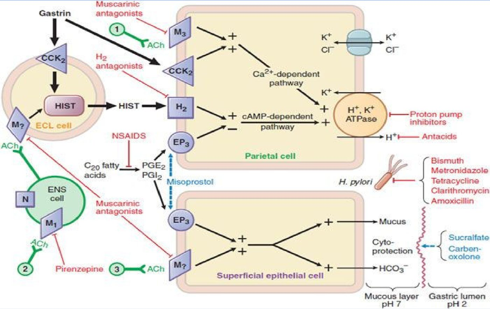
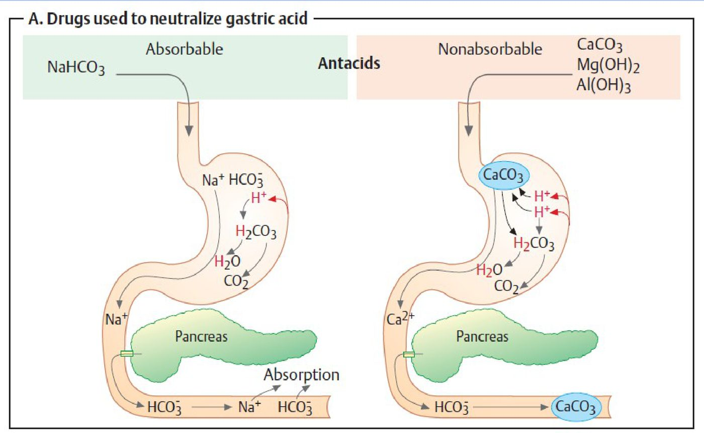
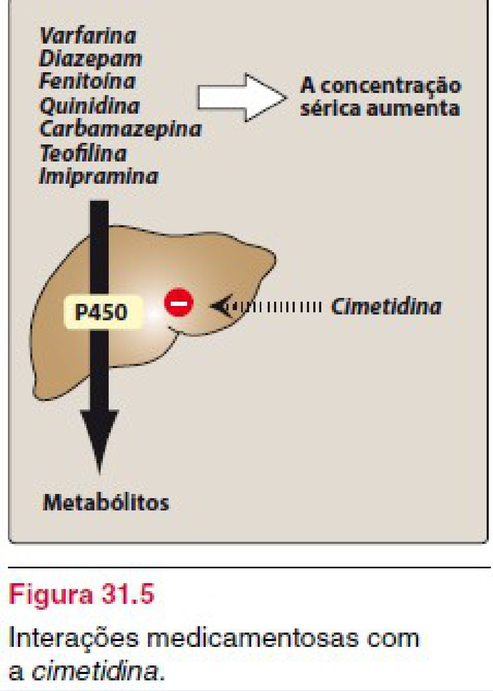
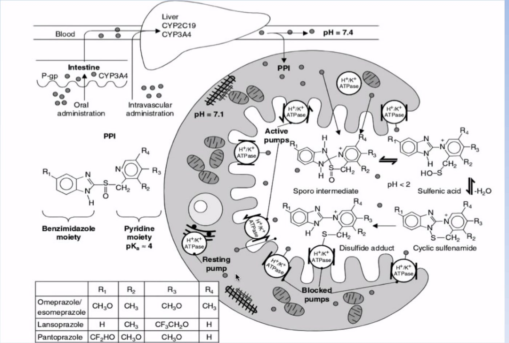
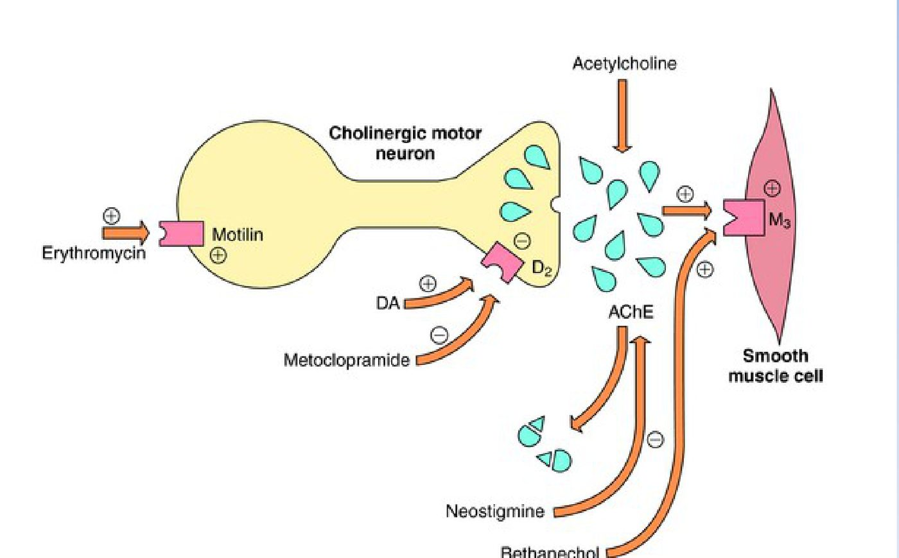

Córtex Estudos · 4º Semestre · Farmaco II · Aula 07
Farmacologia do Sistema Digestório
Acidez e motilidade: os três estímulos da célula parietal, a bomba de prótons por dentro, antiácidos e seus sais, anti-H2, IBPs e vonoprazana, misoprostol e sucralfato, procinéticos — e, pelos slides, laxantes e antidiarreicos. Tudo amarrado à pergunta que a professora repete: "o problema não é o medicamento, é como se usa o medicamento".
📑 Como ler este hub
Na fala, a aula foi da fisiologia da secreção ácida até os IBPs (com procinéticos e laxantes comentados na introdução). Os slides vão além: sucralfato, procinéticos em detalhe, laxantes, antidiarreicos e probióticos. Esse material aparece aqui marcado como "só nos slides" — é conteúdo entregue pela professora e provavelmente retomado na aula seguinte.
1 · Acidez ou motilidade: as duas portas de entrada
- Quase toda queixa digestiva cai em um de dois grupos: controle da ACIDEZ (refluxo, pirose, dispepsia, gastrite, úlcera, DRGE) ou MOTILIDADE (náusea, vômito, diarreia, constipação). Doença de Crohn e síndrome do intestino irritável entram como doenças crônicas com crises — exigem disciplina alimentar.
- A lógica farmacológica sai direto da fisiologia: constipado → estimulo o peristaltismo; diarreia → inibo o peristaltismo; ácido demais → neutralizo, reduzo o estímulo ou bloqueio a bomba.
🎯 A tese da aula: uso racional
Os laxantes estão, junto com os anti-inflamatórios, entre os medicamentos mais mal utilizados. E os IBPs passaram a ser usados "feito água": quando foram lançados, eram tão caros que ficavam para úlceras graves e hemorrágicas; hoje o omeprazol está em qualquer UBS. O IBP não é o vilão — o problema é a pessoa tomá-lo o resto da vida. Se o refluxo é por defeito anatômico (cárdia ou piloro que não funcionam), a resposta é corrigir a anatomia, não medicar para sempre.
2 · Estômago e mucosa: células, cárdia e o que é fisiológico
- Regiões: fundo, corpo e antro. O fundo e o corpo concentram a secreção de muco, pepsinogênio e HCl; o antro, muco, pepsinogênio e gastrina.
- Células da mucosa oxíntica: parietais (HCl — é onde está a bomba de prótons), principais (pepsinogênio — que precisa do ácido para virar pepsina e digerir proteínas), células G (gastrina), mucosas (muco) e enterocromafins-símiles / ECL (histamina).
- Na fala, a professora localizou a maioria das úlceras no corpo gástrico.
⚠️ Divergência: localização das úlceras
Na aula: "a grande maioria das úlceras está no corpo". Na literatura: as úlceras duodenais são mais frequentes que as gástricas; entre as gástricas, a localização típica é a pequena curvatura, próxima à incisura angular (transição corpo–antro). Se cair, responda pela aula, mas saiba a ressalva.
🎯 Cárdia incompetente: idoso e bebê
Idoso tem muito refluxo porque a cárdia deixa de fechar direito. No bebê, a cárdia ainda está em desenvolvimento: devolver um pouco de leite depois de mamar (por isso se faz arrotar) é incompetência fisiológica da cárdia, que melhora até por volta dos 2 anos — não é doença do refluxo. Só se fala em DRGE se a criança não ganha peso (sai da curva). Dar domperidona para algo fisiológico é medicar de forma desnecessária.
3 · Os três estímulos da célula parietal e as fases da secreção
A célula parietal responde a três estímulos: ACETILCOLINA (nervo vago, receptor muscarínico), HISTAMINA (receptor H2) e GASTRINA (receptor CCK-B/CCK2). Diminuir os estímulos já diminui a produção de ácido — muitas vezes é o suficiente.
Por que só a histamina virou alvo de rotina
- 1Antagonizar a ACETILCOLINA? — funciona (a pirenzepina já foi usada), mas o anticolinérgico dá constipação, visão turva, boca seca… muitos efeitos adversos. Foi substituído.
- 2Antagonizar a GASTRINA? — não existe antagonista de gastrina em uso: "a gastrina é importante para nós".
- 3Antagonizar a HISTAMINA (H2) — é o que se faz: ranitidina, famotidina, cimetidina. Inibe um dos estímulos.
- 4Ou pular os estímulos e bloquear a BOMBA — o IBP age na etapa final: seja qual for o estímulo, o H⁺ não sai.
- Fase CEFÁLICA (preparatória): cheiro, visão, ouvir falar de comida, "dar água na boca" — qualquer estímulo sensorial ativa o nervo vago → acetilcolina → secreção. "Só de pensar, é de verdade."
- Fase GÁSTRICA: o alimento distende o estômago → mecanorreceptores mantêm o estímulo; peptídeos e aminoácidos estimulam a célula G.
- A ACh age em cascata: estimula a parietal direto, a célula G (→ gastrina) e a célula ECL (→ histamina). A gastrina também estimula a ECL.

⚠️ Antialérgico (anti-H1) para queimação? Não.
Na mucosa gástrica predomina o receptor H2 (há pouco H1). Na pandemia, com falta de medicamentos, chegou-se a usar anti-histamínico H1 para queimação — não é o adequado. O alvo certo é o antagonista H2.
4 · Estimuladores × inibidores: o equilíbrio agressão–defesa
| Estimulam a secreção gástrica | Inibem a secreção gástrica |
|---|---|
| Acetilcolina (vago) | Prostaglandina E2 (também ↑ muco) |
| Histamina (célula ECL → H2) | Prostaglandina I2 (prostaciclina) |
| Gastrina (célula G) | Somatostatina (células D) |
- Enquanto estimuladores e inibidores estão em equilíbrio, tudo bem. A pirose aparece quando o equilíbrio se perde: um medicamento que tira o muco ou aumenta o ácido, alimento muito ácido/picante, cafeína (estimula a produção de HCl — quem tem problema de estômago deve evitar).
- Fatores agressivos: H. pylori, AINEs, ácido, pepsina, tabagismo (a nicotina age em receptor nicotínico e estimula a via colinérgica). Fatores de defesa: muco, bicarbonato, fluxo sanguíneo, prostaglandinas.
- "Medicamento sozinho não faz milagre": sem reeducação alimentar, o tratamento não se sustenta.


5 · A bomba de prótons por dentro
Para formar HCl na luz, precisa sair H⁺ e precisa sair Cl⁻. Se um dos dois não sair, não há ácido clorídrico.
A sequência na célula parietal
- 1CO₂ + H₂O → H₂CO₃ — reação catalisada pela anidrase carbônica, com o CO₂ e a água do metabolismo da própria célula.
- 2H₂CO₃ → H⁺ + HCO₃⁻ — o bicarbonato sai pela membrana basolateral para o plasma (tampão) em troca de Cl⁻, que entra.
- 3H⁺ sai pela H⁺/K⁺-ATPase — a bomba de prótons joga H⁺ na luz e traz K⁺ para dentro.
- 4Cl⁻ e K⁺ saem por outros transportadores — o K⁺ fica "reciclando" (entra quando sai H⁺, sai acompanhando o Cl⁻) para manter o equilíbrio iônico. Na luz: H⁺ + Cl⁻ = HCl.

🎯 Por que nenhum antissecretor é "para a vida toda"
Todo esse sistema está em equilíbrio, inclusive o tamponamento (o bicarbonato que vai para o sangue). Uma coisa é tomar por ~20 dias, no máximo 2 meses; outra é tomar indefinidamente — "vai ter consequência? Óbvio que vai."
6 · Defesa da mucosa, prostaglandinas e o estrago do AINE
- O estômago se protege por: camada de mucina recobrindo as células, bicarbonato secretado dentro do muco, junções intercelulares estreitas e prostaglandinas vasodilatadoras (↑ fluxo sanguíneo).
- PGE2 e PGI2, sintetizadas na mucosa, agem no receptor EP3 da parietal → inibem a adenilato ciclase → ↓AMPc → inibição parcial da produção de ácido. E têm efeito citoprotetor: ↑ mucina e bicarbonato, ↑ fluxo sanguíneo.
🎯 Por que o AINE é tão danoso ao estômago: "a desgraça está feita"
Ao inibir a COX, o AINE tira as prostaglandinas da mucosa — e perde os dois lados da proteção: ↓ muco/bicarbonato (perde a defesa) e ↑ HCl (perde o freio sobre a parietal). Mais agressão + menos defesa. Por isso é comum prescrever um IBP junto com o AINE, sobretudo se o paciente já tem queixa gástrica.
⚠️ Nuance: AINE + IBP e a ligação a proteínas
Na aula: os dois têm alta ligação a proteínas plasmáticas — há risco teórico de interação, e a decisão é de risco-benefício pela história do paciente. Na literatura: o IBP é a gastroproteção padrão para quem precisa de AINE com risco gastrointestinal; o deslocamento de ligação proteica raramente tem relevância clínica. A mensagem que vale: avaliar se o AINE é mesmo necessário (dor suportável? dipirona resolve?) e por quantos dias — e não prescrever "se dor" sem saber a causa.
7 · O mapa dos alvos e os objetivos do tratamento
| Estratégia | Classe / fármaco | Como age |
|---|---|---|
| Neutralizar o suco gástrico | Antiácidos (sais de Mg, Al, Ca, Na) | base + ácido → sal + água; ↑ pH intragástrico |
| Suprimir a produção de ácido | Antagonistas H2 · IBPs (e vonoprazana) | inibe um estímulo × bloqueia a etapa final |
| Proteger a mucosa | Sucralfato · (misoprostol) | barreira física × análogo de prostaglandina |
| Acelerar o esvaziamento | Procinéticos: metoclopramida, bromoprida, domperidona, alizaprida | antagonismo D2 → ↑ ACh no TGI |
| Erradicar o H. pylori | Antimicrobianos (amoxicilina, claritromicina, metronidazol) + antissecretor | terapia combinada — pela resistência |
Objetivos do tratamento: aliviar ou erradicar sintomas · ↓ duração e frequência do refluxo · recuperar a mucosa lesionada · prevenir complicações (a úlcera que vira úlcera hemorrágica).

⚠️ Divergência: H. pylori — "quatro antibióticos" e "só tratar se tiver sintoma"
Na aula: "geralmente usamos quatro antibióticos" (amoxicilina, claritromicina, metronidazol), pela resistência — como no TB e na hanseníase; e hoje "se trata quem tem sintoma", porque quase todo mundo tem a bactéria. Na literatura: os esquemas têm 3 ou 4 fármacos, mas não 4 antibióticos — terapia tripla = IBP + amoxicilina + claritromicina; quádrupla = IBP + bismuto + tetraciclina + metronidazol. E os consensos indicam tratar todo paciente em quem a infecção foi diagnosticada (o que não se faz é rastrear a população toda). A lógica certa da aula: associação para não selecionar resistência.
8 · Antiácidos: o sal que se forma é o efeito adverso
- Química do ensino médio: ácido + base → sal + água. O antiácido é uma base (sais de magnésio, alumínio, cálcio ou sódio) que neutraliza o HCl e ↑ o pH intragástrico. Início rápido, curta duração — indicado para alívio rápido, não para tratar úlcera (é "efeito paliativo").
- 🎯 Hidróxido de ALUMÍNIO → sal de alumínio → CONSTIPANTE. Hidróxido de MAGNÉSIO → sal de magnésio → LAXANTE (o leite de magnésia sozinho é laxante; usado como antiácido, dá chance de diarreia). Por isso a indústria associa os dois (Al + Mg, "Maalox/Mylanta da vida") — teoricamente um anula o outro.
- Bicarbonato e carbonatos: muito hidrossolúveis, neutralizam rápido e bem — mas liberam CO₂ → eructação ("o arroto do alívio"), náusea, distensão abdominal, flatulência. 🎯 Exacerbam o refluxo: o arroto volta trazendo o ácido junto.
- 🎯 Bicarbonato de SÓDIO é absorvido (sal solúvel): o sódio pode dar pico hipertensivo no hipertenso — inclusive o "sal de fruta". E tem gente que compra bicarbonato a granel e toma uma colher depois de toda refeição.

🎯 Alumínio é Al³⁺: quanto maior a valência, maior a reatividade
O alumínio crônico sequestra o fosfato da dieta no TGI, formando composto insolúvel eliminado nas fezes → hipofosfatemia → desmineralização óssea (osteopenia/osteoporose) — "só por costume de tomar antiácido". O magnésio (Mg²⁺) é menos reativo e não faz isso. (A mesma regra explica por que o ferro é infundido sozinho: Fe³⁺ reage com tudo.)
- Distúrbio ácido-base: clinicamente insignificante com função renal normal, mas pode contribuir para alcalose.
- Insuficiência renal: pequenas quantidades de Al e Mg são absorvidas → acúmulo no renal crônico que ainda não dialisa (quem dialisa tem a máquina "tirando tudo") → uso com cautela. Nefrologia é das especialidades mais difíceis para dosar medicamento.
🩺 A gestante com azia
O útero crescendo comprime o estômago → refluxo, pior à noite (predomínio parassimpático). É passageiro: aqui o antiácido é interessante — alívio do sintoma sem expor o feto a fármacos com potencial teratogênico. O mesmo raciocínio vale para a náusea do 1º trimestre (alimentos ácidos ajudam); antiemético fica para a hiperêmese gravídica, pesando risco-benefício.
9 · Mexeu no pH, mexeu na farmacocinética: interações
Antiácidos (e antissecretores) alcalinizam o estômago — e o antiácido absorvido alcaliniza também a urina. A consequência depende do fármaco; costuma passar despercebida nos de janela terapêutica ampla, mas pesa nos de janela estreita.
| Mecanismo | Fármacos | Resultado |
|---|---|---|
| ↑ pH gástrico (precisam de meio ácido para absorver) | Fenitoína (anticonvulsivante), isoniazida (tuberculostático), cetoconazol, itraconazol (antifúngicos), sulfato ferroso | ↓ absorção → não atinge concentração eficaz (convulsão, infecção que não melhora — a CIM não é alcançada) |
| ↑ pH urinário | Anfetamina, tricíclicos, quinidina (bases fracas) | ficam na forma molecular → reabsorvidas → ↓ excreção |
| Complexos insolúveis (Ca²⁺, Mg²⁺, Al³⁺) | Tetraciclina (com leite: pH básico + cálcio) · quinolonas | complexo não absorvido — "sai nas fezes" |
| Barreira física à absorção | antiácido (e sucralfato) recobrindo a mucosa | ↓ absorção de vários fármacos |
Por isso o pediatra manda dar o sulfato ferroso com suco de laranja: o meio ácido favorece a absorção do ferro.
10 · Antiflatulentos e o manitol
- Simeticona/dimeticona (Luftal): tensoativo/surfactante — diminui as bolhas, reduzindo a sensação de gases (e, nas associações com antiácido, o refluxo e a flatulência). Não é absorvida: sai toda nas fezes. É o "vidro de Luftal" antes da endoscopia — o exame precisa de trato sem gás.
- Manitol: osmótico. Endovenoso → diurético; oral → laxante — por isso é usado no preparo de colonoscopia.
11 · Antagonistas H2 e a cimetidina
- Mecanismo: competição reversível com a histamina pelo receptor H2 da membrana da parietal. 🎯 Não inibem a produção de ácido — inibem apenas UM dos estímulos → ↓ secreção ácida (o ácido continua sendo produzido pelos outros estímulos).
- Fármacos: cimetidina (protótipo), ranitidina (Antak — barata, oral e EV), famotidina (Famox — maior potência relativa, mais cara).
- Cinética: absorção rápida VO, pico em 1–3 h, duração ~10–12 h (maior que a dos antiácidos) → 1–2 tomadas/dia; suprimem bem a secreção basal e noturna. Metabolismo hepático, excreção renal → ajuste na IR grave (↓ dose ou ↑ intervalo).
- RAMs: comuns — diarreia, constipação, cefaleia, sonolência, fadiga, dor muscular; raras — ↑ enzimas hepáticas, nefrite intersticial, artralgia/mialgia, bradicardia/taquicardia/hipotensão/arritmias, neutropenia, trombocitopenia, agranulocitose.
🎯 "Se responder náusea, diarreia e cefaleia, eu não vou considerar"
Todo medicamento do sistema digestório causa náusea, diarreia ou cefaleia — isso não diferencia nada. Na prova, a professora quer o efeito característico da classe. Para os anti-H2, o que importa é a CIMETIDINA: potente INIBIDORA ENZIMÁTICA (P450) — ↑ a concentração de varfarina (janela estreita → sangramento), diazepam, fenitoína, quinidina, carbamazepina, teofilina, imipramina. Por isso quase ninguém a indica hoje.

⚠️ Divergência: por que a ranitidina sumiu
Na aula: a ranitidina sumiu do mercado na pandemia por uma "questão estratégica" — os mais caros ficaram, o barato sumiu — e isso aumentou o consumo de IBP. Na literatura: a ranitidina foi suspensa/recolhida em vários países (inclusive pela Anvisa) a partir de 2019–2020 pela contaminação com nitrosaminas (NDMA), potencialmente carcinogênicas. O efeito prático descrito na aula (famotidina mais cara, migração para o IBP) é real.
12 · Inibidores da bomba de prótons (IBPs)
- Fármacos: omeprazol (Losec) e derivados — lansoprazol, pantoprazol, rabeprazol (por substituição de grupos funcionais), esomeprazol e dexlansoprazol (por purificação isomérica). As mudanças alteram biodisponibilidade, meia-vida e dose terapêutica — mas todos compartilham o mesmo mecanismo.
- 🎯 Eficácia: todos iguais. O mais novo não é mais eficaz — "nenhum trabalho mostra". O que muda é a farmacocinética (e o preço). Para o jovem, a diferença é o preço; para o idoso polimedicado, a farmacocinética (interações) importa. Todos são de dose única diária.
Mecanismo: do comprimido à bomba bloqueada
- 1Lábil em ácido → forma gastrorresistente — abra a cápsula: são microgrânulos revestidos, não um pozinho. No estômago, o ácido o degradaria. Perde o revestimento e o pró-fármaco é absorvido no duodeno.
- 2Base fraca → acumula onde o pH é baixo — concentra-se nos canalículos secretores da célula parietal.
- 3Ativação em meio ácido — vira ácido sulfênico/sulfenamida (forma ativa).
- 4Ligação COVALENTE e IRREVERSÍVEL — ao grupo sulfidrila de cisteínas da H⁺/K⁺-ATPase → bloqueio da secreção basal e estimulada, independentemente do estímulo.
- 5Volta da secreção = bombas novas — só com a inserção de novas moléculas da bomba na membrana; após suspender, a restauração completa leva 3–5 dias. Efeito profundo e duradouro: mantém pH gástrico > 4 mesmo nos picos pós-prandiais.

| Anti-H2 | IBP |
|---|---|
| inibem um dos estímulos secretórios | inibem a etapa final, independentemente do estímulo |
| ↓ secreção ácida (o ácido continua sendo produzido) | inibem a secreção ácida — supressores mais potentes |
| competição reversível no receptor H2 | ligação covalente irreversível à bomba |
🎯 Mais eficaz… e mais efeitos adversos
O IBP é mais contundente que o anti-H2 em eficácia — e, por isso mesmo, também em efeitos adversos. Sem HCl: ↑ risco de infecção (o ácido é barreira), pior digestão e alteração da absorção de vários fármacos.
Farmacocinética
- Absorção VO rápida · ligação a proteínas ≥ 95% · extenso metabolismo hepático · excreção de metabólitos na urina ou fezes.
- Insuficiência renal crônica: não precisa ajustar a dose única diária. Insuficiência hepática grave: ↓↓ depuração → pode ser preciso ↓ dose ou ↑ intervalo.
| Omeprazol | Lansoprazol | Pantoprazol | Rabeprazol | Esomeprazol | |
|---|---|---|---|---|---|
| Biodisponibilidade | 65% | 80% | 77% | 52% | 89% |
| t½ | 0,7 h | 1,3 h | 1,0 h | 1,5 h | 1,2 h |
| Ligação proteica | 95% | 97% | 98% | 96% | 95% |
Interações
- 🎯 Omeprazol e esomeprazol competem pelo CYP2C19 com varfarina, diazepam, fenitoína e citalopram → risco de ↑ concentração plasmática desses fármacos → monitorar e ajustar, ou trocar por pantoprazol ou rabeprazol.
- Lansoprazol, dexlansoprazol, pantoprazol, rabeprazol: baixa afinidade pelo P450 (CYP3A4 e CYP2C19) → menor potencial de interação clinicamente significativa.
- Pelo pH: IBP ↓ absorção de cetoconazol/itraconazol, griseofulvina, sais de ferro, ampicilina, inibidores de protease do HIV (atazanavir, nelfinavir) e vitamina B12; ↑ absorção de digoxina e de outros fármacos de baixo índice terapêutico.
Efeitos adversos e uso crônico
- Geralmente bem tolerados. Frequentes (1–10%), podendo surgir com poucos dias: cefaleia e transtornos GI (diarreia, constipação, dor abdominal, flatulência, náusea, vômito). Estudos sugerem frequência bem menor com o pantoprazol (0,1–1%).
- 🎯 Uso crônico — a razão da DESPRESCRIÇÃO: alteração na absorção de vitaminas e minerais, demência, ↑ risco de infecções, lesão renal, proliferação de tumores carcinoides (hipergastrinemia mantida).
13 · Vonoprazana: o bloqueador competitivo do potássio
- Vonoprazana (Inzelm) é um P-CAB (potassium-competitive acid blocker). Liga-se reversivelmente à H⁺/K⁺-ATPase, competindo com o K⁺ — sem K⁺ disponível, a bomba não troca e não ativa.
- Base fraca, muito lipofílica e estável em pH baixo: não precisa de revestimento entérico nem de ativação ácida → início rápido, elevação rápida do pH, efeito próximo do máximo desde a 1ª dose.
- É mais cara (fármaco novo). No fim, o efeito é o mesmo: não se forma HCl.
⚠️ Divergência: fala × slide sobre a vonoprazana
Na fala: a professora a descreveu como inibindo "outro transportador" — o que troca K⁺ e deixa o Cl⁻ sair — e a resumiu como reversível, logo "menos contundente, menos tempo de ação, menos efeitos adversos"; quanto à eficácia, um colega médico acha que é mais eficaz, mas ela "sinceramente não sabe" (mecanismo final muito parecido). No slide e na literatura: o alvo é a própria H⁺/K⁺-ATPase, em competição com o K⁺; e a efetividade é descrita como superior à dos IBPs (início mais rápido, supressão mais estável). Ponto pacífico: reversível × irreversível é a diferença de mecanismo com o IBP.
14 · Misoprostol e sucralfato
Misoprostol (Cytotec)
- Não há fármaco que "estimule o muco" de forma geral — o que existe é o misoprostol, análogo de prostaglandina: ↑ muco/bicarbonato e ↓ HCl na parietal. Foi lançado como antiulceroso.
- 🎯 Mas a prostaglandina contrai o útero: "o povo sabe mais farmacologia que a gente" — virou abortivo, vendido "como antiulceroso". Por isso não é mais usado como antiulceroso. No hospital, o uso obstétrico (óbito fetal retido, indução) hoje é com o Prostokos — comprimido vaginal de misoprostol de uso hospitalar.
- Ponte com AINEs: AINE no 3º trimestre é contraindicado — sem prostaglandina, interfere no trabalho de parto. E o corticoide age mais acima, na fosfolipase (via lipocortina), também reduzindo esses mediadores.
- Na aula, o recado para adolescentes: misoprostol não é método contraceptivo, e nenhum método hormonal protege de IST.
⚠️ Divergência: análogo de qual prostaglandina?
Na aula: "análogo da prostaglandina E2, praticamente igual". Na literatura: o misoprostol é um análogo sintético da PGE1 (age em receptores EP, inclusive o EP3 da parietal). O slide compara as estruturas com a PGE2 — a ideia de "quase a mesma molécula" se mantém.
Sucralfato (fala + slides)
- Sal de hidróxido de alumínio + octassulfato de sacarose. Em pH < 4 polimeriza → gel/polímero coloidal que adere às células epiteliais e ao fundo da úlcera por até 6 h após dose única — um "muco artificial", barreira física nas mucosas gástrica e duodenal. Os polissacarídeos sulfatados ainda estimulam prostaglandina e fator de crescimento epidermal locais.
- Foi muito usado antes dos IBPs — inclusive na profilaxia de úlcera de estresse na UTI, que hoje se faz com IBP.
- Indicações (slides): falha terapêutica com anti-H2 e IBP · esofagite por ácidos biliares (o sucralfato se liga a eles) · profilaxia de úlcera de estresse. Na DRGE o uso é limitado (só leve; cicatrização ~ anti-H2) — na DRGE grave, o IBP é a escolha.
- Precauções: pequenas quantidades de alumínio são absorvidas → cautela na IRC; evitar uso prolongado e não associar antiácido com alumínio nesses pacientes. Adere a fármacos no TGI: fenitoína, digoxina, cetoconazol, fluoroquinolonas → dar o sucralfato 2 h antes deles.
15 · Procinéticos e antieméticos
- Fármacos: metoclopramida (Plasil), bromoprida (Digesan), domperidona (Motilium), alizaprida (Superan); a cisaprida foi retirada do mercado (prolongamento do QT, arritmias graves).
- 🎯 Mecanismo: a dopamina freia a liberação de acetilcolina no plexo entérico. Antagonizando o receptor D2, sobra mais ACh → estímulo dos receptores M3 da musculatura lisa → ↑ contração e peristaltismo → esvaziamento gástrico mais rápido → menos conteúdo parado, menos êmese. "Todos são antagonistas de algum neurotransmissor."
- Indicações (slides): náusea e vômito de origem central e periférica · gastroparesia diabética e pós-cirúrgica · atraso de esvaziamento pós-operatório · estimulação da lactação · no hospital, acelerar a passagem da nutrição enteral do estômago para o duodeno.

| Metoclopramida (Plasil) | Domperidona (Motilium) | |
|---|---|---|
| Barreira hematoencefálica | ATRAVESSA | Não atravessa significativamente |
| SNC | inquietação, sonolência, insônia, ansiedade, agitação (10–20%, sobretudo idosos) | efeitos extrapiramidais e neuropsiquiátricos raros |
| Extrapiramidais | movimentos involuntários de membros e face, distonia, fala enrolada — mais comuns em crianças e jovens; discinesia tardia em uso longo (às vezes irreversível) | — |
| ↑ Prolactina | galactorreia, ginecomastia, impotência, distúrbios menstruais | também ocorre (galactorreia, ginecomastia, amenorreia) |
| Outros | contraindicada em epilepsia, crianças e com outros fármacos que causam extrapiramidalismo (clorpromazina, haloperidol) | cólicas; prolongamento do QT; metabolismo hepático extenso (cautela na lesão hepática); ajuste na IR em doses repetidas; tomar 30 min antes das refeições |
🎯 Por que não dar Plasil para criança
O antagonista D2 que você já conhece é o antipsicótico (haloperidol) — e é de lá que vem o efeito extrapiramidal. A metoclopramida atravessa a BHE e bloqueia D2 central: na criança pode dar distonia e quadro que os cuidadores interpretam como convulsão. Na pediatria, não se usa.
🩺 A puérpera que "não tem leite"
O ↑ de prolactina é efeito adverso da metoclopramida — e às vezes é usado de propósito para aumentar a lactação. Não é o ideal, mas pode, desde que se saiba o risco e se monitore: o fármaco passa ao leite; se o bebê apresentar movimentos extrapiramidais, suspende.
⚠️ Divergência: a bromoprida atravessa a BHE?
Na aula: "a bromoprida e a domperidona têm ação mais local, não atravessam a barreira". No slide e na literatura: só a domperidona é praticamente periférica; a bromoprida é uma benzamida como a metoclopramida, atravessa a BHE e também pode causar reações extrapiramidais.
📑 Só nos slides: interações e o reflexo do vômito
Os procinéticos são metabolizados pelo P450: inibidores do CYP3A4 (antifúngicos azólicos — cetoconazol, fluconazol —, macrolídeos, inibidores de protease do HIV) ↑ os níveis séricos deles (risco maior de QT e extrapiramidalismo). O esquema do reflexo do vômito lista ainda outras classes antieméticas: antagonistas 5-HT3 (ondansetrona, granisetrona…), antagonistas NK1 (aprepitanto), butirofenonas (droperidol, haloperidol), benzodiazepínicos e corticoides (dexametasona) — usadas sobretudo no vômito da quimioterapia.
16 · Constipação e laxantes
🎯 O que a professora disse na fala
O constipado típico não bebe água e é sedentário; corrigindo isso, a maioria resolve — mas há quem tome laxante a vida inteira. O mais fisiológico é fibra… com água: sem água, a fibra piora a constipação (vira "cimento"). No idoso, o peristaltismo já é menor: o bolo fecal aumentado pode impactar. E o "natural" não é inócuo: os antraquinônicos (cáscara-sagrada) dão cólica forte — no idoso hipertenso, a dor pode subir a pressão. Tudo é risco-benefício.
📑 Daqui em diante, só nos slides
O conteúdo abaixo (fisiologia da água intestinal, classes de laxantes e antidiarreicos) estava nos slides e não foi comentado na fala desta aula.
- Água nas fezes: ~80% do peso fecal; o conteúdo líquido é o principal determinante de volume e consistência e reflete entrada (ingestão + secreção) × saída (absorção). O delgado absorve quase tudo (capacidade ~16 L/dia); chegam ~1,5 L ao cólon (capacidade ~4 L/dia). Capacidade do cólon ultrapassada → diarreia; reabsorção excessiva → constipação.
- Constipação: < 5 evacuações/semana (♂) ou < 3 (♀), esforço, desconforto pélvico, fezes duras/fragmentadas, pequeno volume.
- Tratamento em degraus: ① ↑ fibras e líquidos · ② atividade física · ③ rotina para responder ao estímulo defecatório · ④ investigar doença de base · ⑤ fármaco. 1º passo inclui trocar fármacos constipantes.
| Classe | Exemplos | Como age | Cuidados |
|---|---|---|---|
| Formadores de bolo fecal | Psyllium (fibra de Plantago ovata) · policarbofila cálcica (sintética) | retêm água → ↑ volume e trânsito. Psyllium absorve água em qualquer pH (pode distender o estômago; fermentado → gases); policarbofila absorve 3–4× mais, sobretudo em meio básico (intestino), não é fermentada → não dá flatulência | "mais fisiológicos", mas contraindicados na obstrução mecânica/megacólon; no idoso (hipotonia) → distensão e impactação |
| Osmóticos | Lactulose, polietilenoglicol (os mais eficazes), sorbitol, manitol, glicerina | não absorvíveis → retêm água na luz → ↑ fluidez e estímulo ao peristaltismo; em altas doses, evacuação em 1–3 h | potencialmente desidratantes; flatulência, cólica, diarreia, distúrbio eletrolítico (sobretudo os de magnésio) → evitar na insuficiência renal e/ou cardíaca importante |
| Emolientes / surfactantes | Docusato de sódio (associado ao bisacodil) | ação tensoativa: incorpora água e gordura ao bolo → amolece em 1–3 dias; ↓ esforço | acamados, pós-parto, pós-operatório; ↑ secreção de Na⁺, Cl⁻ e água no ceco → curto período |
| Lubrificantes | Óleo mineral VO | reveste as fezes e ↓ absorção de água no cólon; efeito em 6–8 h | para evitar esforço por < 2 semanas; uso prolongado → má absorção de vitaminas A, D, E, K, cálcio e fosfato |
| Estimulantes (catárticos) | Difenilmetanos: bisacodil, picossulfato · Antraquinonas: cáscara-sagrada, sene · óleo de rícino | inibem a absorção de Na⁺/glicose (↑ água na luz) e estimulam o plexo mioentérico (contrações rítmicas) | cólica; último degrau da sequência |
17 · Diarreia e antidiarreicos
- Diarreia = ↑ frequência e ↓ consistência (variável entre indivíduos). Causas: infecciosa (vírus, bactérias, fungos, parasitas), doenças crônicas (Crohn, intestino irritável, retocolite ulcerativa), quimio/radioterapia. Mecanismos (1 ou mais): ↑ carga osmótica, secreção excessiva de eletrólitos e água, exsudação de proteína/fluidos pela mucosa, ↑ motilidade.
- 🎯 A maioria é autolimitada; o risco maior está em crianças e idosos (desidratação, distúrbio eletrolítico) → a base é a REIDRATAÇÃO.
| Classe | Fármacos | Mecanismo |
|---|---|---|
| Antimotilidade (opioides) | Loperamida (Imosec), difenoxilato (Lomotil), Papaver somniferum | receptor μ intestinal → ↓ peristaltismo, ↑ tônus do esfíncter |
| Antissecretórios | Racecadotrila (Tiorfan) · salicilato de bismuto (Pepto-Zil) | racecadotrila: pró-fármaco que inibe a encefalinase → protege as encefalinas endógenas, que agem no receptor δ → ↓ secreção de água/eletrólitos, sem efeito na motilidade. Bismuto: antissecretório + bactericida + liga toxinas (diarreias infecciosas; repetir de 1/1 h, máx. 8 doses/dia; escurece língua e fezes, sem significado clínico) |
| Adsorventes | Caolim-pectina (+ Al(OH)₃) · policarbofila cálcica | adsorvem água, toxinas e bactérias, formam camada protetora e melhoram a consistência — alívio sintomático da diarreia aguda |
| Probióticos | Saccharomyces boulardii (Floratil) | levedura resistente a sucos digestivos, bile e antibióticos; antagonismo microbiano (inibe in vitro Proteus, E. coli, Shigella, Salmonella) → restaura a flora |
🎯 A pegadinha da policarbofila
É uma fibra sintética indicada tanto para constipação quanto para diarreia: adsorve água no intestino e muda a consistência das fezes nos dois sentidos.
✅ Resumo rápido da aula
- Duas portas: acidez (pirose, dispepsia, gastrite, úlcera, DRGE) × motilidade (náusea, vômito, diarreia, constipação). Tese: uso racional — IBP e laxante não são para a vida toda.
- Parietal: 3 estímulos — ACh (vago; fase cefálica), histamina (H2, célula ECL), gastrina (célula G). Anticolinérgico = muitos efeitos; antagonista de gastrina não existe; alvo = H2 (não H1).
- Inibidores endógenos: PGE2, PGI2 (EP3 → ↓AMPc) e somatostatina. AINE tira PG → ↑HCl + ↓muco.
- Bomba: anidrase carbônica → H⁺ + HCO₃⁻; HCO₃⁻/Cl⁻ na basolateral; H⁺/K⁺-ATPase na apical; sem H⁺ ou sem Cl⁻ não há HCl.
- Antiácidos: alívio rápido e curto, não tratam úlcera. Al → constipa + sequestra fosfato (osso); Mg → laxante; associação equilibra. Bicarbonato/carbonato → CO₂ (piora refluxo); NaHCO₃ absorvido → pico hipertensivo. IR não dialítica → acúmulo de Al/Mg. Gestante: antiácido.
- Interações por pH: ↓absorção de fenitoína, isoniazida, ceto/itraconazol, sulfato ferroso; urina alcalina ↓excreção de anfetamina, tricíclicos, quinidina; quelação com tetraciclina e quinolonas.
- Anti-H2: competição reversível; inibem UM estímulo; pico 1–3 h, duração 10–12 h; ajuste na IR grave. Cimetidina = inibidora do P450 (varfarina!). Ranitidina saiu do mercado.
- IBP: pró-fármaco gastrorresistente, base fraca, ativado no ácido, ligação covalente IRREVERSÍVEL; 3–5 dias para recuperar; todos com a mesma eficácia (muda PK e preço). Omeprazol/esomeprazol + CYP2C19 (varfarina, diazepam, fenitoína, citalopram) → pantoprazol/rabeprazol. Crônico: infecção, ↓B12/ferro, demência, lesão renal, carcinoide → desprescrever.
- Vonoprazana: P-CAB reversível, compete com K⁺, estável em ácido (sem revestimento), início rápido; mais cara.
- Misoprostol: análogo de PG, antiulceroso abandonado por ser abortivo (Prostokos = uso hospitalar). Sucralfato: polimeriza em pH < 4, "muco artificial"; Al → cautela na IRC; dar 2 h antes de fenitoína, digoxina, cetoconazol, quinolonas.
- Procinéticos: antagonismo D2 → ↑ACh (M3). Metoclopramida atravessa BHE → extrapiramidal (não em criança), ↑prolactina (lactação). Domperidona não atravessa; QT. Cisaprida retirada (QT).
- Laxantes (slides): bolo fecal (cuidado no idoso/obstrução) · osmóticos (lactulose, PEG; evitar IR/IC) · emolientes (docusato) · lubrificantes (óleo mineral: ADEK) · estimulantes (bisacodil, sene, cáscara).
- Antidiarreicos (slides): reidratar primeiro · loperamida (μ) · racecadotrila (encefalinase, δ, sem efeito na motilidade) · bismuto · adsorventes · S. boulardii. Policarbofila serve para os dois lados.
💊 Resumão Pré-Prova — Sistema Digestório
Revisão da véspera · Farmaco II · Aula 07 · só o que foi enfatizado
| Estímulo | Origem | Receptor na parietal | Fármaco |
|---|---|---|---|
| Acetilcolina | nervo vago (fase cefálica: cheiro, visão, pensar) | muscarínico | pirenzepina (abandonada: efeitos anticolinérgicos) |
| Histamina | célula ECL (enterocromafim-símile) | H2 | anti-H2 (não anti-H1!) |
| Gastrina | célula G (antro) | CCK-B | nenhum antagonista em uso |
- Inibidores endógenos: PGE2 e PGI2 (receptor EP3 → ↓adenilato ciclase → ↓AMPc; + muco, bicarbonato, fluxo) e somatostatina (células D).
- AINE: sem PG → ↑HCl + ↓muco ("a desgraça está feita") → IBP associado quando há risco/queixa.
- Agressão × defesa: H. pylori, AINE, ácido, pepsina, tabaco (nicotínico) × muco, HCO₃⁻, fluxo, PG. Cafeína ↑ ácido.
- Bomba: CO₂ + H₂O (anidrase carbônica) → H⁺ + HCO₃⁻ · HCO₃⁻ sai trocado por Cl⁻ · H⁺ sai pela H⁺/K⁺-ATPase · Cl⁻ vai à luz · K⁺ recicla.
- Cárdia: idoso (incompetente) e bebê (imatura até ~2 anos — regurgitar ≠ DRGE; DRGE = não ganha peso).
| Sal | Efeito adverso marcante | Por quê |
|---|---|---|
| Al(OH)₃ | constipação · hipofosfatemia → desmineralização óssea | Al³⁺ muito reativo sequestra o fosfato da dieta |
| Mg(OH)₂ | diarreia (é laxante) | sal de Mg osmótico; Mg²⁺ não sequestra fosfato |
| Al + Mg | efeitos intestinais atenuados | um constipa, o outro solta |
| NaHCO₃ | eructação, piora do refluxo · pico hipertensivo | CO₂ + Na⁺ absorvido |
| CaCO₃ | eructação, distensão, flatulência | CO₂ |
- Perfil: início rápido, curta duração; alívio sintomático; não tratam úlcera.
- IR não dialítica: acúmulo de Al/Mg → cautela. Alcalose: rara com rim normal.
- Gestante: refluxo por compressão uterina (pior à noite), transitório → antiácido em vez de fármacos com potencial teratogênico.
- Simeticona/dimeticona: tensoativo, não absorvida (preparo de endoscopia). Manitol: EV diurético, VO laxante (preparo de colonoscopia).
- ↑pH gástrico → ↓absorção: fenitoína · isoniazida · cetoconazol/itraconazol · sulfato ferroso (por isso o suco de laranja).
- ↑pH urinário → ↓excreção: anfetamina · tricíclicos · quinidina (bases fracas reabsorvidas na forma molecular).
- Complexos insolúveis: tetraciclina (leite/Ca²⁺) · quinolonas (Ca, Mg, Al).
- IBP: ↓absorção de ceto/itraconazol, griseofulvina, ferro, ampicilina, atazanavir/nelfinavir, B12 · ↑absorção de digoxina.
- Relevância maior nos fármacos de janela terapêutica estreita.
- MOA: competição reversível no H2 → inibem um estímulo (não inibem a produção) → ↓secreção, sobretudo basal e noturna.
- Cinética: pico 1–3 h · duração ~10–12 h (1–2×/dia) · hepático/renal · ajuste na IR grave.
- Fármacos: cimetidina (protótipo) · ranitidina (Antak; saiu do mercado) · famotidina (Famox; maior potência, mais cara).
- MOA: pró-fármaco lábil em ácido (cápsula gastrorresistente) → absorvido no duodeno → base fraca acumula no canalículo → ativado (sulfenamida) → ligação covalente irreversível à cisteína da H⁺/K⁺-ATPase → bloqueia secreção basal e estimulada.
- Duração: secreção volta só com bombas novas — 3–5 dias após suspender. pH > 4 mesmo pós-prandial.
- Eficácia igual entre todos; muda PK e preço. Dose única diária. Ligação proteica ≥ 95%.
- IRC: sem ajuste · IH grave: ↓dose/↑intervalo.
- CYP2C19: omeprazol/esomeprazol ↑varfarina, diazepam, fenitoína, citalopram → pantoprazol ou rabeprazol (baixa afinidade pelo P450).
- RAM frequente: cefaleia, GI (pantoprazol menos). Crônico: ↓vitaminas/minerais, demência, infecções, lesão renal, carcinoide → desprescrição.
- Misoprostol (Cytotec): análogo de PG (↑muco, ↓HCl) — abandonado como antiulceroso por ser uterotônico/abortivo; Prostokos = vaginal, hospitalar.
- Sucralfato: Al(OH)₃ + octassulfato de sacarose; polimeriza em pH < 4, adere à úlcera até 6 h; ↑PG e EGF locais. Antes dos IBPs: profilaxia de úlcera de estresse na UTI. Indicações: falha de anti-H2/IBP, esofagite por ácido biliar. DRGE: só leve. IRC: acúmulo de Al. Dar 2 h antes de fenitoína, digoxina, cetoconazol, quinolonas.
- MOA: antagonismo D2 → ↑ACh → M3 da musculatura lisa → ↑peristaltismo, esvaziamento rápido → ↓vômito.
- Metoclopramida (Plasil): atravessa BHE → extrapiramidal (distonia — crianças/jovens), discinesia tardia (uso longo), SNC (idosos), ↑prolactina. Contraindicada em criança, epilepsia, com haloperidol/clorpromazina.
- Domperidona (Motilium): não atravessa → bem tolerada; ↑prolactina, cólica, QT; 30 min antes das refeições.
- Cisaprida: retirada (QT/arritmias). Inibidores do CYP3A4 (azólicos, macrolídeos, IP do HIV) ↑níveis dos procinéticos.
- Indicações: náusea/vômito, gastroparesia diabética, esvaziamento pós-cirúrgico, lactação, nutrição enteral.
- Primeiro: água + atividade física + rotina + trocar fármaco constipante. Fibra sem água = piora.
- Bolo fecal: psyllium (gases), policarbofila (sem gases) — contraindicados na obstrução/megacólon; idoso → impactação.
- Osmóticos: lactulose e PEG (mais eficazes), sorbitol, manitol, glicerina; desidratantes; evitar IR/IC; Mg → distúrbio eletrolítico.
- Emolientes: docusato (1–3 dias; acamado, pós-parto, pós-op). Lubrificante: óleo mineral (6–8 h; < 2 semanas; ↓ADEK).
- Estimulantes: bisacodil, picossulfato, sene, cáscara-sagrada (cólica — idoso hipertenso!).
- Base: maioria autolimitada → reidratação (risco em crianças e idosos).
- Loperamida: μ → ↓peristaltismo. Racecadotrila: inibe encefalinase → encefalinas no δ → antissecretório, sem efeito na motilidade.
- Bismuto: antissecretório + bactericida + liga toxinas (escurece fezes/língua, sem significado). Adsorventes: caolim-pectina, policarbofila. Probiótico: S. boulardii.
- "Criança com vômito, recebeu Plasil, torcicolo/'convulsão'" → distonia extrapiramidal (D2 central).
- "Hipertenso que toma bicarbonato após as refeições" → sódio absorvido → pico hipertensivo.
- "Antiácido crônico + dor óssea/fosfato baixo" → hidróxido de alumínio.
- "Varfarina + cimetidina (ou omeprazol)" → ↑INR/sangramento → trocar por pantoprazol.
- "Itraconazol que não funciona + antiácido/IBP" → ↓absorção por ↑pH.
- "Tetraciclina com leite" → quelato insolúvel.
- "Gestante com azia no 3º trimestre" → antiácido.
- "Idoso acamado, pouca água, psyllium" → impactação.
- "Misoprostol vendido como antiulceroso" → uso abortivo.
- Anti-H2 × IBP: inibe um estímulo (reversível) × bloqueia a etapa final (irreversível).
- IBP × vonoprazana: pró-fármaco ativado em ácido, irreversível × estável em ácido, reversível, compete com K⁺.
- Al × Mg: constipa + sequestra fosfato × laxante.
- H1 × H2: alergia × estômago (anti-H1 não serve para queimação).
- Metoclopramida × domperidona: atravessa BHE (extrapiramidal) × não atravessa (QT).
- Omeprazol/esomeprazol × pantoprazol/rabeprazol: CYP2C19 com interações × baixa afinidade pelo P450.
- Loperamida × racecadotrila: μ, ↓motilidade × δ (encefalinas), antissecretório sem mexer na motilidade.
- Manitol EV × VO: diurético × laxante.
- Psyllium × policarbofila: fermentado (gases) × não fermentada (sem gases; serve também para diarreia).
Banco de Questões — Sistema Digestório
Farmaco II · Aula 07 · estilo ENADE/residência.